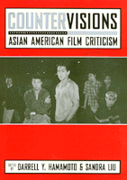

<body bgcolor="#FFFFFF" text="#000000" link="#0000FF" vlink="#CC0000" alink="#CC0000"><center><hr width="350" size="1" align="center" noshade>Asian American film makers and film critics discuss their cultural output<hr width="350" size="1" align="center" noshade><p><a href="https://cdcshoppingcart.uchicago.edu/Cart/ChicagoBook.aspx?ISBN=9781566397759&&PRESS=temple" target="_top">Buy this book!</a> | <a href="https://cdcshoppingcart.uchicago.edu/Cart/Cart.aspx?PRESS=temple" target="_top">View Cart</a> | <a href="https://cdcshoppingcart.uchicago.edu/Cart/Cart.aspx?PRESS=temple" target="_top">Check Out</a></p><p></p></center><!--none//--><h1>Countervisions</h1>
<H2>Asian American Film Criticism</H2>
<h3>edited by Darrell Y. Hamamoto and Sandra Liu</h3>
<P>cloth 1-56639-775-8 $84.50, Aug 00, <FONT COLOR=#990033>Out of Stock Unavailable</FONT>
<br>paper 1-56639-776-6 $35.95, Aug 00, <FONT COLOR=#990033>Available</FONT>
<br>Electronic Book 1-43990-878-8 $34.95 <FONT COLOR=#990033>Out of Stock Unavailable</FONT>
<BR> 317 pp
7x10
39&nbsp;halftones
</P><BLOCKQUOTE><I>"The essays in </i>Countervisions<i> venture beyond representation within the nation to other cinematic spaces&#151transnational, queer, and "neo-Asian American"&#151making this an exciting contribution to ethnic studies, film studies, and cultural studies."</I>
<br>&#151<b>Lisa Lowe</b>, University of California, San Diego and author of <i>Immigrant Acts</i><I></I></BLOCKQUOTE>
<P>Spotlighting Asian Americans on both sides of the motion picture camera, <I>Countervisions</I> examines the aesthetics, material circumstances, and politics of a broad spectrum of films released in the last thirty years. This anthology focuses in particular on the growing presence of Asian Americans as makers of independent films and cross-over successes. Essays of film criticism and interviews with film makers emphasize matters of cultural agency&#151that is, the practices through which Asian American actors, directors, and audience members have shaped their own cinematic images.
<P>One of the anthology's key contributions is to trace the evolution of Asian American independent film practice over thirty years. Essays on the Japanese American internment and historical memory, essays on films by women and queer artists, and the reflections of individual film makers discuss independent productions as subverting or opposing the conventions of commercial cinema. But <I>Countervisions</I> also resists simplistic readings of "mainstream" film representations of Asian Americans and enumerations of negative images. Writing about Hollywood stars Anna May Wong and Nancy Kwan, director Wayne Wang, and erotic films, several contributors probe into the complex and ambivalent responses of Asian American audiences to stereotypical roles and commerical success. Taken together, the spirited, illuminating essays in this collection offer an unprecedented examination of a flourishing cultural production.
<BR>&nbsp;<h2>Reviews</h2>
<p><i>"</i>Countervisions<i> provides cutting-edge film criticism which addresses representations and productions concerning Asian-Americans from both mainstream and alternative sources. Representing a broad spectrum of positions and issues, the reader provides a rich collection of material that demonstrates the growing significance of Asian-American cultural studies and cinematic practices."</i>
<br>&#151<b>Douglas Kellner</b>, UCLA and author of <I>Media Culture</I>
<p><i>"</i>Countervisions<i> is an exhilarating, much-needed examination of the multi-faceted world of Asian American film and video. The writing is lively; the observations acute and well-informed by an historical perspective and a forward-looking contemporary sensibility. Above all, </i>Countervisions<i> lives up to its title by providing multiple interpretations of contemporary Asian American images and representations."</i>
<br>&#151<b>Eddie Wong</b>, Executive Director of NAATA
<p>Read a <a href="../authors/1387_review.pdf">review</a> from <I>JAAS</I>, Volume 5.1 (February 2002), written by Josephine Lee (pdf).
<BR>&nbsp;<h2>Contents</h2><P>
<p>List of Illustrations
<br>Acknowledgments
<br>1. Introduction: On Asian American Film and Criticism &#150 Darrell Y. Hamamoto
<p><b>Part I: Resignifying Asian American Bodies</b>
<br>2. When Dragon Ladies Die, Do They Come Back as Butterflies? Re-Imagining Anna May Wong &#150 Cynthia W. Liu
<br>3. Recuperating Suzie Wong: A Fan's Nancy Kwan-dary &#150 Peter X. Feng
<p><b>Part II: Negotiating Institutional Boundaries</b>
<br>4. The Joy Fuck Club: Prolegomenon to an Asian American Porno Practice &#150 Darrell Y. Hamamoto
<br>5. Negotiating the Meaning of Access: Wayne Wang's Contingent Film Practice &#150 Sandra Liu
<br>6. Through the Mirror, Sideways &#150 Lindsey Jang
<p><b>Part III: Critical Approaches to Representing Japanese American Internment</b>
<br>7. Re/membering Spectators: Meditations on Japanese American Culture &#150 Kent A. Ono
<br>8. Antidote for Collective Amnesia: Rea Tajri's Germinal Image &#150 Glen Masato Mimura
<br>9. The Gendering of Historical Trauma in Internment Camp Documentary: The Case of Steven Okazaki's <I>Days of Waiting</I> &#150 Elena Tajima Creef
<p><b>Part IV: Exploring Form</b>
<br>10. Fighting Fire with Fire: <I>Detournement</I>, Activism, and Video Art &#150 Valerie Soe
<br>11. Hybrid Cinema by Asian American Women &#150 Jun Xing
<br>12. Character-Zone: A Conversation with Trinh T. Minh-ha &#150 Gwendolyn Foster and Trinh T. Minh-ha
<br>13. Bad Asians: New Film and Video by Queer Asian American Artists &#150 Eve Oishi
<p><b>Part V: Going Beyond the Nation-Based Model: Diasporas and Hybrid Identities</b>
<br>14. No Mo Po Mo and Other Tales of the Road, <b>Renee Tajima-Pe�a</b>
<br>15. "Unashamed to be so beautiful": An Interview with Celine Salazar Psarrenas &#150 Theodore S. Gonzalves
<br>16. <I>The Wedding Banquet</I>: Global Chinese Cinema and the Asian American Experience &#150 Gina Marchetti
<br>17. Cultural Identity and Diaspora in Contemporary Hong Kong Cinema &#150 Julian Stringer
<p>Distributors
<br>About the Contributors
</P><BR>&nbsp;<H2>About the Author(s)</H2>
<table><tr><td valign="top"><img src="/tempress/authors/1387_au1.gif" height="90" width="75"></td><td width="100%" valign="middle"><p><B>Darrell Y. Hamamoto</B> is Associate Professor in the Asian American Studies Program at the University of California, Davis. He is the author of <I>Nervous Laughter: Television Situation Comedy and Liberal Democratic Ideology</I>, <I>Monitored Peril: Asian Americans and the Poltics of Television Representation</I>, and <I>New American Destinies: a Reader in Contemporary Asian and Latino Immigration</I>.</P></td></tr></table><P><B>Sandra Liu</B> is a Ph.D. candidate in the Department of Ethnic Studies, University of California, Berkeley.</P>
<BR><H2>Subject Categories</H2>
<p><A HREF="/tempress/asian_amer.html" TARGET="_top">Asian American Studies</a>
<BR><A HREF="/tempress/cinema.html" TARGET="_top">Cinema Studies</a>
<BR><A HREF="/tempress/race.html" TARGET="_top">Race and Ethnicity</a>
</p>
<BR><h2 class="inpageheading">In the series</H2>
<P><I><a href="http://www.temple.edu/tempress/asam_history.html" onMouseOver="window.status='Click for other books in this series!'; return true;" onMouseOut="window.status=''; return true;" target="_top">Asian American History and Culture</a></i>, edited by K. Scott Wong, Linda Trinh V�, and Cathy Schlund-Vials.
</p><p>Founded by Sucheng Chan in 1991, the <I>Asian American History and Culture</I>, series has sponsored innovative scholarship that has redefined, expanded, and advanced the field of Asian American studies while strengthening its links to related areas of scholarly inquiry and engaged critique. Like the field from which it emerged, the series remains rooted in the social sciences and humanities, encompassing multiple regions, formations, communities, and identities. Extending the vision of founding editor Sucheng Chan and emeriti editor Michael Omi and David Palumbo-Liu, series editors K. Scott Wong, Linda Trinh V�, and Cathy Schlund-Vials continue to develop a foundational collection that embodies a range of theoretical and methodological approaches to Asian American studies.</p>
<p align="center"><a href="https://cdcshoppingcart.uchicago.edu/Cart/ChicagoBook.aspx?ISBN=9781566397759&&PRESS=temple" target="_top">Buy this book!</a> | <a href="https://cdcshoppingcart.uchicago.edu/Cart/Cart.aspx?PRESS=temple" target="_top">View Cart</a> | <a href="https://cdcshoppingcart.uchicago.edu/Cart/Cart.aspx?PRESS=temple" target="_top">Check Out</a></p><p><font face="Arial" size="1"><a href="copyright.html" onMouseOver="window.status='Web Copyright Policy';return true;" onMouseOut="window.status=''" title="Web Copyright Policy">&copy;</a> 2015 <a href="http://www.temple.edu" target="new" onMouseOver="window.status='Link to Temple University home page';return true;" onMouseOut="window.status=''" title="Link to Temple University home page">Temple University</a>. All Rights Reserved. http://www.temple.edu/tempress/titles/1387_reg.html</font></p>